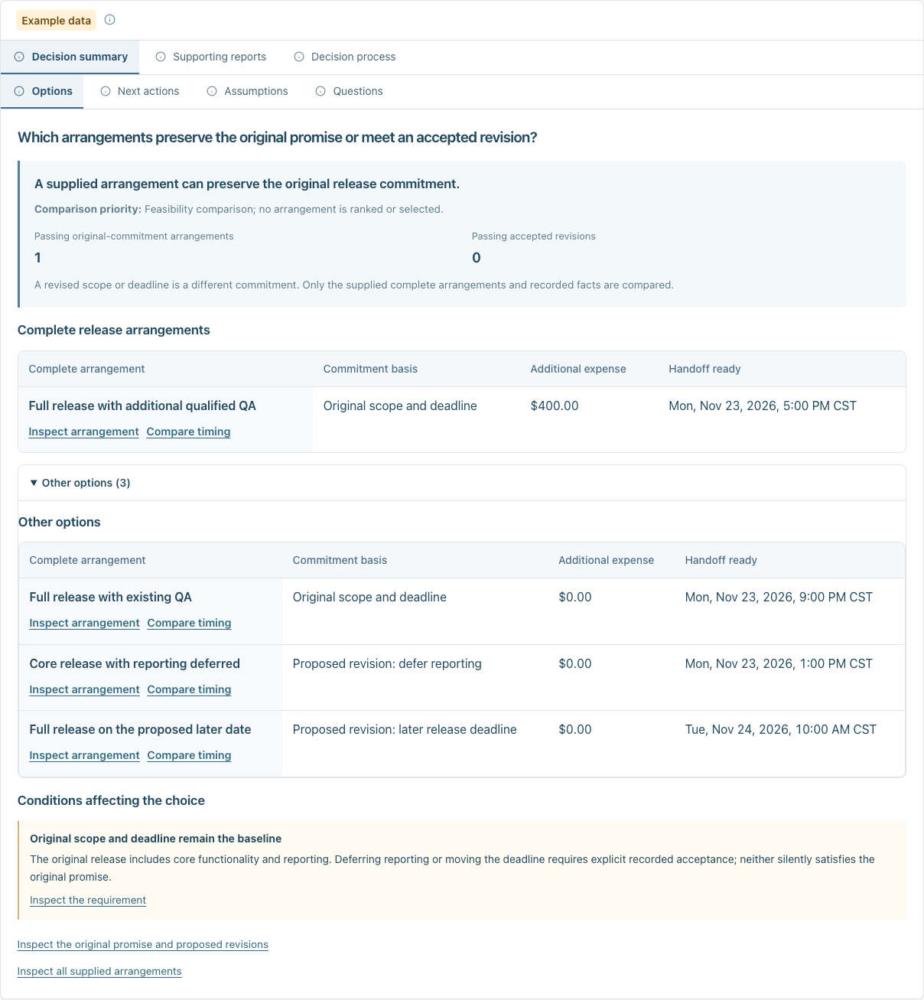
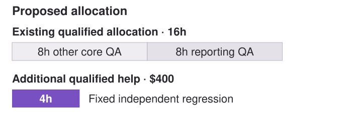
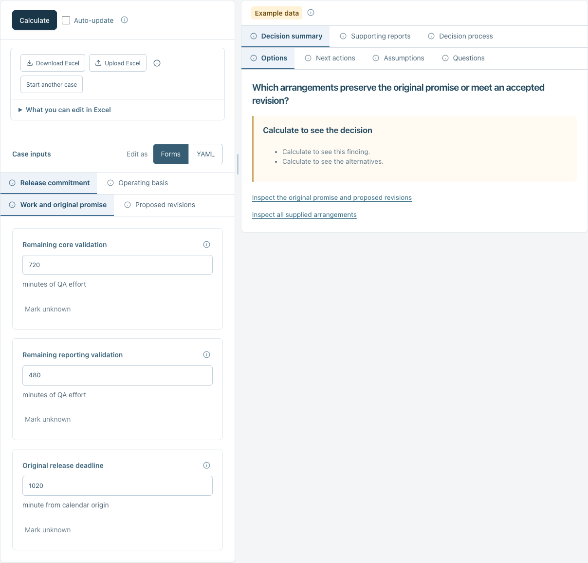
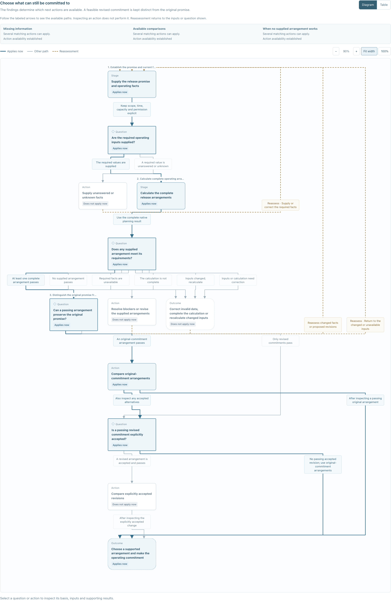

Nina has a customer call approaching and a release commitment she cannot defend by repeating the date. Release 2026.11 includes core functionality and reporting. Both were promised by the original cutoff. The remaining-work review now shows twelve hours of core QA and eight hours of reporting QA.
Engineering wants to retain the full release. The customer expects reporting. Finance has recorded a $500 additional-expense limit. Nina's existing qualified QA allocation provides sixteen working hours before the final handoff, leaving a four-hour shortfall. She needs a supportable response before the conversation becomes another unsupported promise.
Keep the original promise in the comparison.
Nina could ask the team to try harder, remove reporting, buy extra help or propose a later release. Each suggestion changes a different part of the problem. A lower workload does not establish that the customer agreed to receive less. An available tester does not establish that the right work can transfer.
In this fictional case, the original cutoff is 5 p.m. on November 23. The supplied model uses a declared calendar origin and whole-minute offsets; it retains that deadline in every comparison. The sixteen-hour QA window represents an exclusive qualified team allocation that can span shifts, rather than a proposed sixteen-hour shift for one person.
Nina reviews the remaining QA estimates separately from availability, qualifications for this build and validation environment, other bookings, prerequisites and recorded release permission. A Jira estimate can contribute workload information. It does not supply those operating facts.
Compare four complete responses.
An arrangement is a complete combination of scope, assigned work, resources, timing and supporting conditions. Decision Lab checks the supplied combinations together. The commitment assessment pattern asks which complete arrangements can satisfy the declared obligations.
| Complete arrangement | Calculated finding | Decisive condition |
|---|---|---|
| Full release with existing QA | Blocked | The supplied schedule exceeds the existing working window and original deadline. |
| Core release with reporting deferred | Blocked | The scope revision has not been accepted. |
| Full release with additional qualified QA | Meets the recorded requirements | The $400 independent-regression package fits its qualified working interval and the $500 limit. |
| Full release on the proposed later date | Blocked | The proposed deadline has not been accepted. |


The distinction matters: two suggested recoveries require a changed promise. They cannot become acceptable simply because their work fits a schedule. The full release with existing QA retains the promise in its definition, but fails to deliver it under the recorded conditions.
The $400 buys a particular piece of usable capacity.
The additional resource takes the authored four-hour independent core-regression package. The remaining validation stays with existing QA. The transfer requires qualifications and availability covering the entire assigned interval.


The complete arrangement also includes a one-hour release handoff and reaches the original 5 p.m. cutoff exactly. There is no modeled deadline slack. Changed estimates or resource intervals need another calculation.
Nina's preference is explicit: preserve the promised scope and date while staying within the approved $500 boundary. The $400 arrangement supports that preference in the baseline. The app compares feasibility without ranking arrangements; it does not calculate whether reporting is worth $400 or make Nina's choice for her.
Read the working review from the answer outward.
The workflow's Decision summary brings the complete arrangements together. Supporting reports let Nina inspect Arrangement details, Work and timing and the Original commitment. The decision-process graph connects supplied facts and calculated findings to the next available actions.
Explore the release example. The link installs the Software delivery collection when needed and opens its supplied fictional analysis.
- In Inputs → Release commitment, inspect the work and original promise. Operating basis holds the separate capacity, qualifications and prerequisite records.
- Keep the supplied baseline for the first comparison and choose Calculate.
- Open Decision summary → Options. Expand Other options to include the blocked arrangements, then inspect an arrangement's conditions in Supporting reports.
See the supplied inputs beside the report


Follow the release decision process
The graph separates finding an arrangement that preserves the promise from considering an accepted revision. Its next actions depend on the calculated findings; inspecting a path does not perform the business action.


A changed input makes the previous finding stale. Nina must recalculate before treating it as current. Report inspection helps her explain the basis; it does not hire the tester, perform QA or authorize a release.
Nina can make a specific proposal.
She can enter the customer call with a concrete recovery: retain core functionality and reporting, use the qualified $400 regression engagement, and keep the original cutoff subject to the recorded operating conditions. She can also name its vulnerability: the plan finishes at the boundary.
If the customer instead agrees to defer reporting, Nina has a different decision. See what changes when a reduced release is explicitly accepted. If the tester's qualification fails, the same $400 offer no longer establishes usable help.
Have a release approaching its deadline? Bring the remaining-work estimates, original commitment and recovery options. The Jira-data companion explains which facts an export can supply before the next promise.